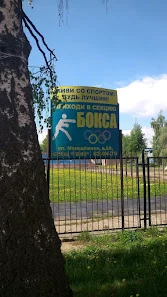
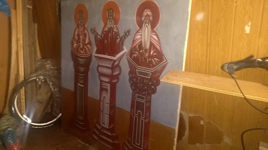

Кадр первый / путь без адреса
раздел 04 · эксперимент
Несообразная конструкция: как медленный подъём в старом городском здании. Здесь два уникальных кадра из рабочего дневника — без повторов, точных адресов и неподтверждённых координат.
нажмите ↑ ↓
или проведите по кадру

Кадр первый / путь без адреса

Кадр второй / тихая стена